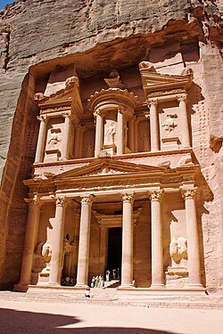

Petra is a historical and archaeological city in southern Jordan. It is famous for its rock-cut architecture and water conduit system. Petra is also known as the "Rose City" due to the color of the stone from which it is carved. It was established possibly as early as 312 BC as the capital city of the Nabataeans. Petra has been a UNESCO World Heritage Site since 1985 and was also named one of the New Seven Wonders of the World in 2007.
